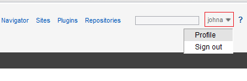
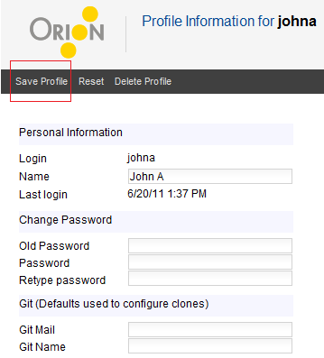

You can access your user profile page by selecting Profile from the drop-down menu next to your user name on the right hand side of the title area.

From this page you can change information such as your name and Git author information. You can also use this page to change your password. Make any desired changes in the text fields, and then click Save Profile in the tool bar.

This document is maintained in a collaborative wiki. If you wish to update or modify this document please visit http://wiki.eclipse.org/Orion/Documentation/User_Guide/Reference/Profile_page